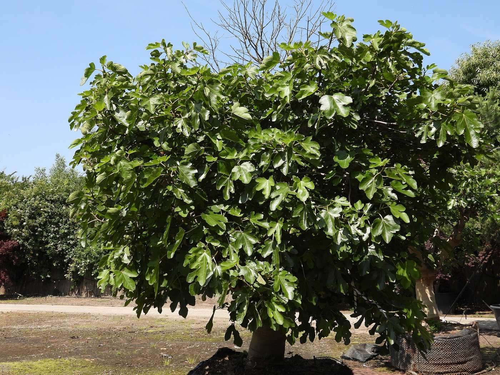

制作側の連想
ガーリックプレスの部位を、配置図にしてみる
ガーリックプレスの部位を図にしたもので、制作側の連想です。お店の理念・由来とは無関係で、実際の器具の仕様を示すものでもありません。六つの部位に番号をふり、上の図と並べています。
凡例
六つの部位
- 1上の柄手で握って下げる、上側の長い腕。てこの力で押し板を下へ動かす。
- 2下の柄上の柄と向かい合う、下側の長い腕。先端につぶし室がつながる。
- 3押し板つぶし室にちょうど入る厚みの板。上の柄の動きを受け、中身を押し下げる。
- 4つぶし室押し板を迎える、深さのある小さな室。材料を入れておくところ。
- 5穴あきの底小さな穴がずらりと並んだ底の板。押された中身が、細い筋になって出てくる。
- 6ヒンジ(軸ピン)二本の柄をつなぎ、回る動きの中心になる小さな軸。
写真(イメージ)
写真(イメージ)





写真はイメージです。お店のものではありません。
ご案内
お店のこと(確認できたものだけ)
| 所在地 | 〒275-0016 千葉県習志野市津田沼５丁目６−１７ |
|---|---|
| 電話 | 準備中 |
| 営業時間 | 準備中 |
| 定休日 | 準備中 |
| ご予約 | 準備中 |
| 駐車場 | 準備中 |
| SNS | Instagram @coffee_karasu |